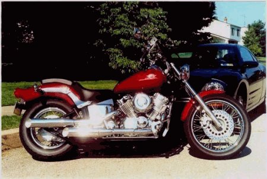
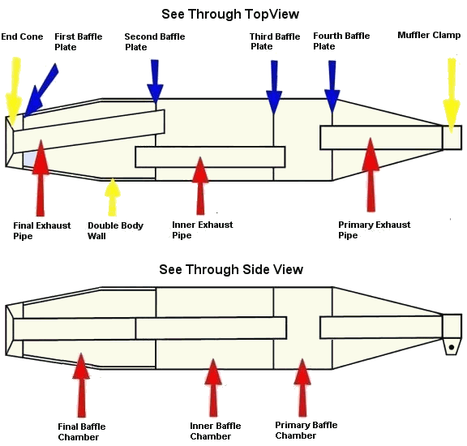
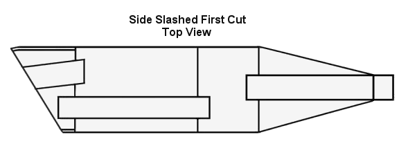
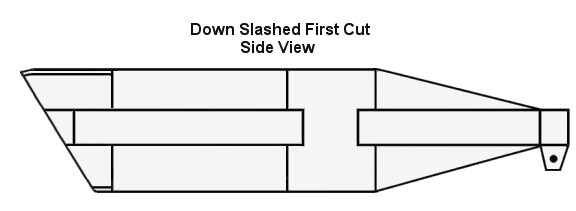

Slash Cutting The V-Star Stock Pipes
Thanks to Benny Bryant
A Special thanks to Ron Weiser and the Green Mamba
If you're like me, one of the first things you probably wanted to change on your new V-Star is the stock exhaust system. The sound, or noticeable lack thereof, just didn't seem to suit this beautiful bike. For a month or so I messed around with the various mods that were documented on the V-Star related web sites. None of them produced the sound I was after. At some point, I ran across an article written by Benny Bryant on the Shooting Stars Over Alabama Delphi Forum. The article described a radical modification to the stock exhaust system that Benny developed and tested. This modification consists of cutting the end of the muffler off and removing the internal exhaust pipes and baffle plates. Since I had reconciled myself to the fact that I was going to spend $300-$400 on a new exhaust system, I had nothing to lose in hacking away at my stock setup!
What I ended up with was an awesome sounding, great looking set of pipes for about $25. I have had a chance to listen to a few different sets of aftermarket pipes on other V-Stars and the modified stock pipes are second to none. If I ever replace my modified exhaust system it will only be for a change in appearance, not because of the sound!

The following discussion will hopefully provide a basic understanding of the internal construction of the V-Star 650 exhaust system and the steps necessary to modify the mufflers to get 'that sound' you're after.
NOTE*** If you *like* the sound of the stock exhaust system, or you don't have parental consent to make these and other modifications to your V-Star, you must exit this page now!
First things first; credit for developing and testing this modification goes to Benny Bryant of the Shooting Stars Over Alabama. Photographs, courtesy of Benny Bryant. You can see this and other modifications to V-Stars and other bikes at Benny Bryant's company web site at www.fantasiesonwheels.com Visit the Shooting Stars Over Alabama Delphi Forum for discussions and tips about V-Star modifications. You will find a wealth of information there, along with some great people! For additional information on stock exhaust system modifications along with lots of really helpful pictures, visit the Shooting Stars Over Alabama web page.
The first two diagrams show the 650 and 1100 V-Star mufflers in a, "sort of see through" view. These diagrams are *not* to scale and merely intended to illustrate the construction and internal components of the mufflers. The tags used to describe the components will be referenced throughout this write-up.

The following diagrams show both a side view and a top view of a muffler that has had the initial slash cut completed. The cut can be at any angle and at any distance from the end of the muffler given the following; If you are *NOT* going to completely gut the muffler, then the angle and distance from the end of the pipe must be such that the second baffle plate *MUST* remain intact. If you want to gut the pipe it doesn't matter where the cut is since all the internal pipes and baffle plates will be removed anyway.
Since I semi-gutted my mufflers I had to locate the position of the second baffle plate. On my mufflers, the second baffle plate was located inches from the front edge of the muffler clamp. I don't know if this varies from muffler to muffler. Since I already had holes drilled through the end cone and first baffle plate, I located the position of the second baffle plate with a stiff wire inserted through the end cone. JUST MAKE SURE YOU HIT THE SECOND BAFFLE PLATE AND DON'T GO THROUGH ONE OF THE BAFFLE REDIRECTION PORTS! Since you can see the second baffle plate after the mufflers are slashed, you want the cut to be back a ways from the baffle plate. I outside slash cut mine at 45 degrees and ended up about 3/4" behind, to the rear of the baffle plate.
The easiest way to make the slash cut is to find a local machine shop and have them do it for you on a horizontal band saw. You can cut them yourself with a hack saw but it's difficult to get a straight and clean cut. The machine shop route should cost around $15-$25.
Locate the position and angle of the cut and mark the cut line on the muffler using a felt tip pen. Wrap the entire cut line with wide masking tape to prevent the chrome from chipping while the initial cut is made, however the chrome does actually hold up very well when the muffler is cut. If going the machine shop route for the cut, I recommend protecting the chrome finish with wide masking tape. This will help to keep the finish from getting scratched while clamped in the band saw. You may also want to take a couple of blocks of soft wood to place in the jaws of the clamp, to further protect the finish.

